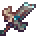

Сломанный клинок биома
Сломанный клинок биома (От англ Broken Biome Blade) — уникальное пре-хардмодное оружие ближнего боя, которое можно создать. По умолчанию он не стреляет снарядами и не имеет никаких специальных эффектов. Однако, если игрок стоит неподвижно на ровной поверхности, удерживая ПКМ в течение 2 секунд, он ударит мечом по земле, настроив его на окружающий биом, что позволит ему выполнять уникальные атаки.
Меч имеет возможность хранить дополнительную настройку во вторичном слоте, который он автоматически заполняет предыдущей использованной настройкой, когда она заменяется другой. Использование ПКМ, не останавливаясь на месте или не удерживая кнопку, будет переключать первичные и вторичные настройки.
Лучший модификатор - Легендарный (Legendary)
Сломанный Клинок Биома имеет 5 различных настроек.
Сломанный клинок биома
Характеристики
Типы : Оружие
Стак 1
Автоатака Есть
Урон 47
Крит шанс 4%
Время использования 30 (Очень медленное)
Отбрасывание 5 (Среднее)
Описание
Ничего не делает... пока. Удерживайте ПКМ на 2 секунды, стоя на ровной поверхности, чтобы настроить оружие на силу окружающего биома Нажатие ПКМ переключает текущий резонанс на дополнительно сохранённый Основной резонанс : [Нет] Вторичный резонанс : [Нет]
Продажа 80